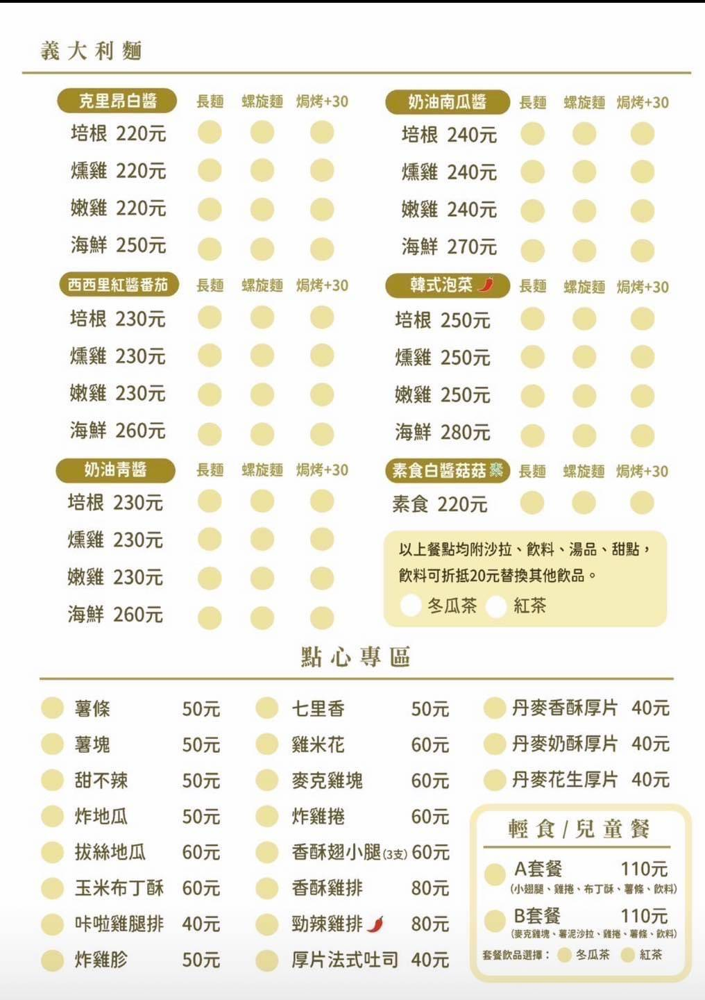
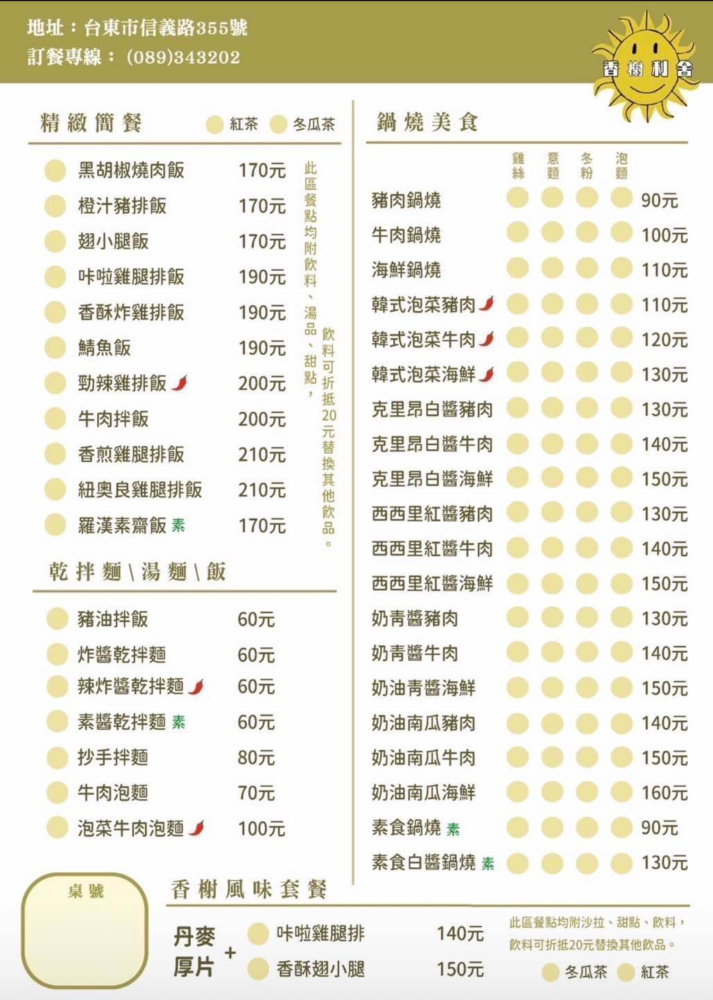
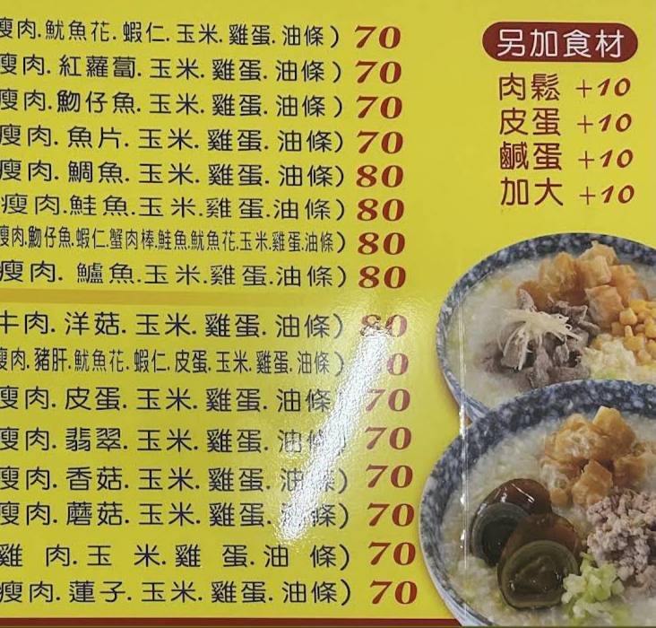
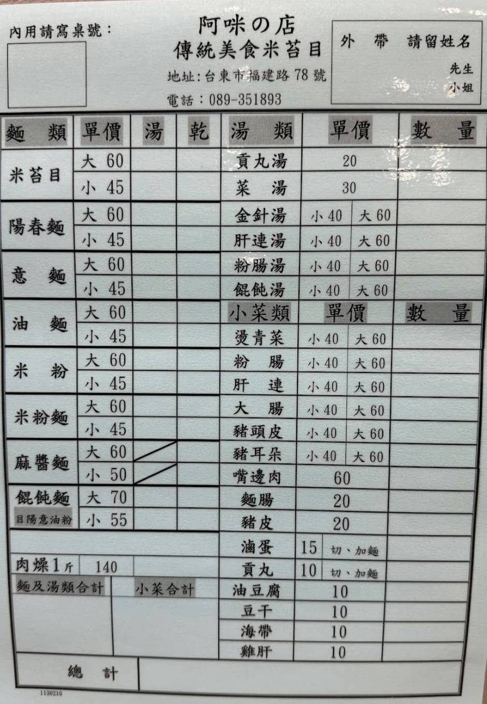
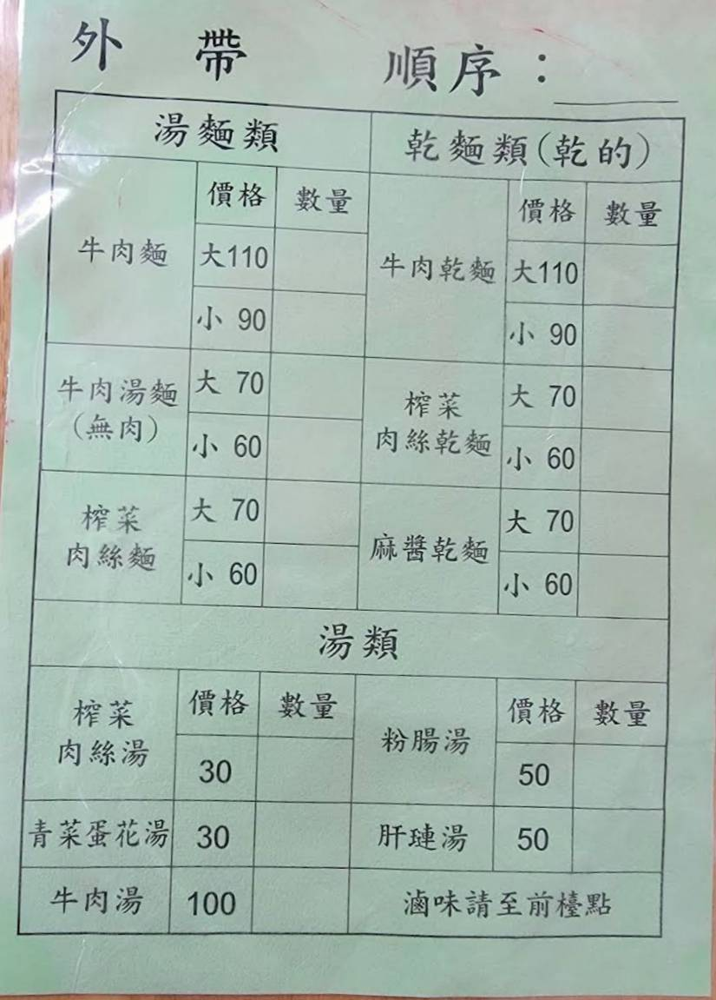

香榭利舍
地點:
- 台東縣台東市信義路355號
- 停汽車位置較不方便，可能需要離店面停一段距離
- 位於小路內，比較不好找到店面
營業時間:
- 10：00~14：00、16：30~20：00
- 沒有特別明顯的尖峰客人時間
評價:
- 餐點主要是以簡餐為主，價格不貴
- 注意一點為點餐時大杯的飲料都是1000c.c.
- 內用位置許多，而且用餐環境非常優美，吃正餐或是下午茶都不錯
- 推薦點心：拔絲地瓜、玉米布丁酥


粥潤發廣東粥
地點:
- 台東縣台東市光明路47號
- 店面在大路上，但店面不明顯，還是要注意在哪裡
- 附近停汽車不方便
營業時間:
- 9：30~19：00，星期日公休
- 傍晚時段客人較多
評價:
- 餐點上的每個粥都風味不錯，不會有太鹹或太淡的問題，其中廣東粥最推薦大家
- 不喜歡皮蛋的可以選擇其他沒有皮蛋的粥來吃 沒有提供內用只能外帶
- 此店也是在地饕客愛吃的店家之一，所以現場等餐需要較長時間


阿咪米苔目
地點:
- 台東縣台東市福建路78號
- 位於小路，店面需找一下
- 有提供停車場，但附近路小需要注意行車
營業時間:
- 7：30~15：00、17：00~20：30，星期二公休
- 客人偏多，餐點製作需要等待一段時間
評價:
- 米苔目價格不貴，而且肉燥味很香，味道也很古早味非常的不錯吃
- 小菜也是相當的好吃
- 價格相較於其他家米台目便宜，吸引較多在地饕客去購買

許家莊牛肉麵復興店
地點:
- 台東縣台東市鐵花路87巷14號
- 在復興國小斜對面
- 停車算方便
營業時間:
- 11：00~19：30，星期日公休
- 人潮最多時間在12點與16點
評價:
- 牛肉麵是用普通的白麵下去煮的，但是湯頭好喝而且牛肉不會太乾柴，其他麵食餐點也不錯吃
- 小菜價格不貴而且涼拌黃瓜非常不錯
- 內用位置不少，冷氣房內有10個桌子，而外面桌子也有6桌
